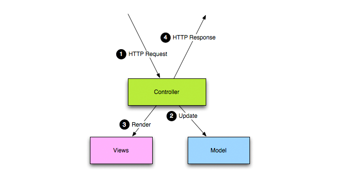
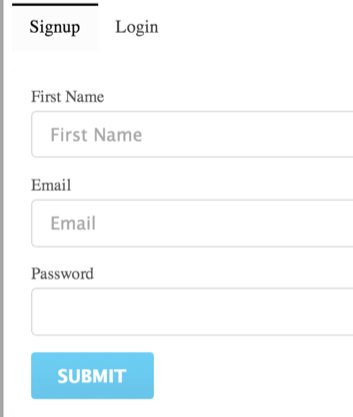
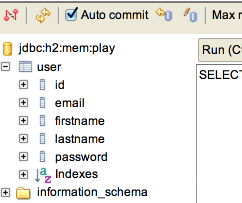
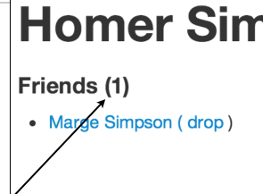
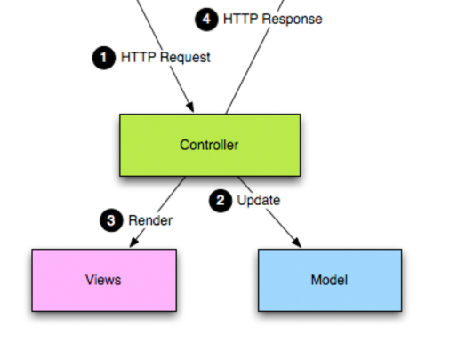

Moodle Bootstrap Combination

In your Moodle module you can incorporate Bootstrap objects that will enable you to introduce structural design and navigation. In this slide we will look at the most common Bootstrap object that we use, and where in Moodle we can use these objects, you wont need any coding skills, but you will need to be able copy and paste.
Turnitin
For assessment you can benefit from Turnitin. In your Moodle module you can add a turnitin assignment type which will enable your student to submit their work which in turn will be 'text' matched against other resources on the Internet.
Moodle Bootstrap Combination

In your Moodle module you can incorporate Bootstrap objects that will enable you to introduce structural design and navigation. In this slide we will look at the most common Bootstrap object that we use, and where in Moodle we can use these objects, you wont need any coding skills, but you will need to be able copy and paste.
Google Docs Basics

In these labs we will look at the basics of Google docs, what they are how you access them, how you share them and some other nice to know features.
Case Study

A review of the web site presented in lab-07-a. This lab encapsulates many of the practices we have encountered so far.
Semantic-UI I

An overview of the container and segments styles in the framework
Semantic-UI II
An exploration of the Grid and Image styles.
Semantic-UI III

An exploration of the Tables
Semantic Part IV

Our final tour of the Semantic-UI library - with a focus on icons, variations in segments and responsive grids
Deployment

Deploying a site involves understanding a little more about Clients & Servers, Hosting Providers, Domain Names, Transferring the Sites Files, HTTP and Absolute & Relative Paths
Harp & Surge

Harp.js and Surge.sh are the two services we will use to server the page locally, and also to deploy it to a public web server.
Templates

The EJS template system implements mechanisms for assembling sites from templates - which are called 'partials' in EJS. Additionally, there is a complimentary 'layout' mechanism for reusing entire page structures.
Dynamic Web Applications

The applications to date have been static - essentially a collecting of individual web pages. For more sophisticated web site we need to move to creating web applications. This will require a shift to considering the web site as an aggregating of fragments of web pages, composed and assembled by a program we also write.
Starting to Play

To build a web application we need a web framework. This will define the superstructure of our application and provide essential features to enable us to compose a complicated and efficient web application
Spacebook Skeleton

This is the starter web application you will build in this weeks lab. It will always have a very specific structure coupled with a tightly controller life cycle for handing requests.
Play Project Structure

Play applications follow a specific layout and structure. Understanding this is the key to making sense of play applications, allowing the developer to 'grow' applications in an orderly manner.
Play Project Structure

Play applications follow a specific layout and structure. Understanding this is the key to making sense of play applications, allowing the developer to 'grow' applications in an orderly manner.
Routes, Controllers & Views

Play applications are orchestrated through the routes file. This matches the urls the application can 'serve' to the controllers, which will build the views specific to each request.
Building Web Applications

Web applications can be designed, implemented and tested in an orderly manner - as part of a structured and organised process. Central to such a process is a series of 'user stories', which concisely capture the features the application is to deliver.
Exercises

The exercises in this weeks lab will reinforce your understand of routes/controllers. Here we preview how you might approach these exercises.
Play Review

The framework structure should now be feeling more familiar. Here we review the major features of the framework again, this time focusing on how the framework delivers the major features of a Web Application.
Form Design

A key differentiator between a Static Web Site and a Web Application is forms. This is where the user is invited to entered information - and this data may be retained and stored somewhere.
Models

Retrieving information from the form and storing it is a model is at the heart of Form design. Here we look at the implementation of a simple sign up form.
Review Forms

Another look at the forms concept. Forms are the central mechanism for acquiring information from a user - enabling simple strings and numbers to be entered into a page and 'submitted' to an application.
Models & Databases

A database is where we store information between requests. The model classes we introduce are saved here and we can subsequently query and update any objects we insert.
Sessions

Keeping track of the currently logged in user is a challenge - as HTTP is, by definition 'stateless'. Hidden form fields, url rewriting and cookies are three common techniques for implementing sessions.
Sessions in Play

In Play we have a simple and convenient session mechanism, which can conveniently remember information about the currently logged in user.
Exercises

These are the worked solutions to the exercises in Lab10
Status & Members List

The Status Text is a text field the the user can enter on her profile page. The members list will be a list of actual users (not a hard coded list of the simpsons) that will be displayed on the Members page
Following Friends

Implementing a way of following friends requires a new Model class. This will model a "Friendship" relationship, one of which will be created whenever a user 'follows' another user.
Assignment 2

This is the specification for Assignment 2. You can either pursue a project using a (new) CSS framework, or attempt a set of stories in the Spacebook/Play project.
Lab 11 Exercises

Solutions to the exercises from Lab 11
Spacebook Review

A complete look at the Spacebook application, with a focus in the structure of the Play Framework, the routes and the controllers.
Messages
A key feature of spacebook is to emable users to leave messages for their friends. This will require a new Model class to represent individual Message objects, new actions in our Profile controller + new features in our templates.
Pictures
The final feature of Spacebook is to facilitate an image upload form a user Profile page. This will need an extension to the User model + a new action and template fragment.
Play Tips & Tricks

Some useful tips for Yaml file processing, parameter passing and Image preloading in Play apps.